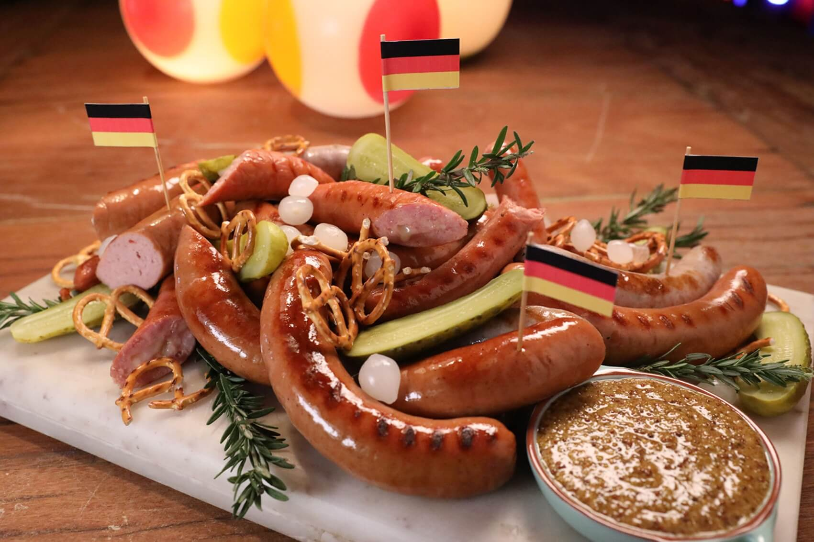
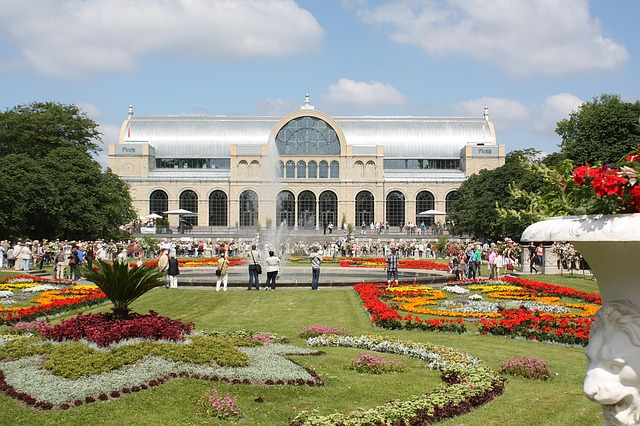

Это федеративная многопартийная республика парламентского типа с двумя законодательными органами Бундесратом (в него входят представители земель) и Бундестагом (парламентом).
Глава государства - Президент. Он представляет Германию в вопросах международного права и заключает от имени страны договоры с иностранными государствами.
Глава исполнительной власти - Федеральный канцлер (бундесканцлер). Он возглавляет правительство и определяет основные направления политики.
Согласно национальной истории, в 1945 году Германия разделилась на две части, а ее воссоединение произошло только в 1990.
История Германии характеризуется постоянным процессом завоеваний, оккупаций и перестройки. Реки Дунай и Рейн отделили германские племена от католиков в 1-ом столетии нашей эры, но 600 лет спустя, христианство распространилось и на эти земли. Карл Великий, король французский, который победил саксонцев и боварцев, основал Первый Рейх (первую империю) в начале 9-ого столетия. Более поздние связи с итальянскими королевствами привели к вхождению в Священной Римскую империю. В 1517 году, Мартин Лютер провозглашает реформацию движения. В конечном счете, напряженные отношения между протестантами и католиками привели к Тридцатилетней войне, которая закончилась в 1648 году. Сильная власть местных принцев сохранила Германию, как действительно объединенную нацию до того времени, как окрепла власть пруссов и сформировалась немецкая империя в 1871 (Второй Рейх), под канцлерством Отто фон Бисмарка и первого кайзера Вилхелма I. Только после правления еще двух кайзеров, монархия была низвержена, а Вилхелм II отказывался от своего трона в конце Первой мировой войны.
История Германии в эпоху Второй Мировой войны. Международная депрессия в 1930-ых вызвала чрезвычайно высокую инфляцию и политическую неустойчивость в Веймарской республике. Эти условия были на руку Нацистской партией, с помощью которой к власти в 1933 году пришел Адольф Гилтер. Это случилось в 1933 и стало началом Третьего Рейха. В 1939 году Германия вторглась в Польшу, которая начала Вторую мировую войну. После того, как Германия была побеждена, она снова была разделена на части - восточный сектор под контролем Советского Союза и три западных сектора под управлением Франции, Великобритании и США. В период Холодной войны, Восточная Германия обладала самым высоким уровнем жизни среди стран Варшавского договора, хотя это процветание было относительным: Западная Германия вырвалась вперед с «экономическим чудом», подстрекаемый Маршальским планом. Берлинская стена упала в ноябре 1989, и меньше чем через год, две Германии были воссоединены. Сегодня, объединенная Германия - это экономическая мощь Европы.
Территориально Германия разделяет границы с девятью странами. Больше ни одна страна в Европе не граничит с таким количеством государств. Внутри Германия разделена на 16 bundeslander (области или штаты). Единственные береговые линии страны находятся на севере - это берега Северного и Балтийского морей. На юге, главным образом, находятся предгорья и горы: Альпы на дальнем юге и горы Erzgebirge на юго-востоке. Центральная часть страны также ограничена несколькими меньшими горными цепями. Северная часть страны (где-то треть всей территории) - по большей части равнина. Большое количество рек также отличительная особенность Германии. Главные - это Рейн, который течет на север в западной части страны; Дунай, который начинается как струйка на юго-западе и становится огромной рекой делеко на востоке; Эльба, которая протекает через Дрезден на юго-востоке и впадает в Северное море около Гамбурга; и Одер и Ныса-Лужицка, которые вместе формируют восточную границу с Польшей. Если бы страна была циферблатом часов, то Берлин был бы в положении - 2, Дрезден - 3, Мюнхен - 6, Франкфурт - 9, Кельн - 10 и Гамбург - 12.
С июня по сентябрь - наилучшее время, чтобы совершить поездку в Германию. Погода днем в это время очень теплые, а ночью в меру прохладная (обязательно прихватите с собой жакет, особенно если направляетесь в Баварию). Будьте готовы к дождям на протяжении всего лета. Апрель, май и октябрь также могут быть хорошими месяцами для путешествия в Германию, особенно для тех, кого больше интересуют музеи. В это время дневная температура будет приблизительно градусов на 5 ниже, чем летом, но сельские пейзажи в это время смотрятся гораздо лучше (полевые цветы весной, цвет опавшей листвы осенью). На протяжении последних месяцев осени и ранней зимой, fohn - теплый южный ветер, может принести в Баварию и Альпы более теплые температуры, чем на равнинах. В декабре Германия пестрит восхитительными рождественскими ярмарками, которые называются Christkindlmarkt или Weinachtsmarkt, где вы сможете купить изготовленные вручную подарки и украшения, сидр или вино и услышать рождественскую музыку. Возите с собой всегда свитер в любое время года, куда бы вы не направились в Германии. Погода зимой в Германии холодная и часто довольно снежная, лыжный спорт - лучшее развлечение этого времени года.
Не смотря на то, что как и в любой другой стране, в Германии существуют региональные различия в кулинарии, есть блюда, которые популярны в общенациональном масштабе. Немецкая кухня очень разнообразна, а в ее основе лежат блюда из холодного мяса, телятина, отбивные из свинины, сыры (особенно в Альпийской области), колбаса и сосиски, превосходные виды хлеба, картофель или хлебные клецки (knodel) с мясом и соусом, невероятно вкусная форель из Констанцского озера, шницель Wiener (запанированные котлеты из телятины), утка (особенно на юге), Konigsberger klopse (свинина и фрикадельки из телятины), слоёный рулет с яблоками, рейнский лосось и квашеная капуста. На севере очень много блюд из рыбы и там ее готовят лучше всего, а вот пища южных регионов имеет тенденцию быть более тяжелой и жирной. На востоке, немцы намного чаще жарят мясо, чем в других частях Германии, и употребляют его с картофелем. Среди местных особенностей - квашеная капуста со свининой, bockwurst (вареная сосиска) и rostbratl (жареный картофель с ветчиной или беконом). Часть лучшей и недорогой еды готовится в немецких гостиницах, такие места очень популярны, так как часто столики там выставлены прямо на улицу и можно обедать на свежем воздухе. Есть много итальянских и восточных ресторанов. Самое популярные рестораны быстрого питания - это турецкие шашлычные, которые продаются на стендах imbiss.
Пребывая в Германии, трудно не пробовать превосходные немецкие вина и пиво. Сорта weisse, weizen или weissbier относятся к пшеничным сортам пива, которое бывают в двух вариантах: hefe (с высоким содержанием дрожжей) и kristall (ясное, искристое пиво лимонного цвета). В Берлине попробуйте пиво Berliner Weisse (малиновый сироп в большом кубке пшеничного пива), Apfelwein (яблочное вино) и франкфуртское особенное.

Величественный дворец немецкой государственности, построенный в 1894 году, стал свидетелем всех исторических событий, сформировавших судьбу современной Германии.
Классическая арка Бранденбургских ворот по замыслу архитекторов являет собой Врата мира, но по иронии судьбы через них немецкие солдаты отправлялись воевать.

На острове посреди реки Шпрее расположились 5 берлинских музеев. Этот исторический комплекс начал свое развитие от первого построенного в 1830 году здания, названного Старым музеем, в котором представлена экспозиция античных статуй, оружия и древнегреческих украшений.

Уродливое ограждение из бетона высотой более трех метров, опутанное колючей проволокой, протяженностью около 160 км отделило Западный Берлин от Демократической Германии в 1961 году и простояло 28 лет, разделяя немецкий народ на два враждебных государства.

Самый посещаемый музей Германии был назван в честь своего главного экспоната – Пергамского алтаря, найденного при раскопках на землях одноименного царства, которое существовало в 290-120 годах до н.э. на территории современной Турции (ныне город Бергама).

Каждый день тут прогуливается несколько тысяч жителей и гостей города, наслаждаясь видами великолепных колонн и позолоченной статуи Девы Марии.

Сооружение создали в готическом стиле, добавив в него элементы архитектурного направления ренессанс.
Постройка также выполнена в стиле неоготика, но в 19 столетии.

Охотничий «домик» 15 столетия, созданный по приказу Альбрехта Третьего.
В современном дворце можно посмотреть на кабинет с китайскими лакированными панелями в красном и черном цветах, на картины прославленного художника Штилера, на фрески рук Циммермана и на центральный зал с интерьером рококо.
Внутри величественного храма находится крест Геро (самое большое распятие Европы), скульптура Мадонны Миланской и золотой ларец с мощами трех волхвов.
Глазам откроются виды городского Собора и Рейна, удивительные панорамы целого города. Дата строительства канатной дороги – 1957 год. По словам местных жителей, данный вид «транспорта» наиболее безопасный и экологичный.
Яркий пример того, что посетить в Кёльне будет интересно человеку любого возраста. Здание музейного комплекса, величиной свыше 2 тысяч квадратов, выполнено в форме корабля.
Территория облагорожена целиком: открыты кафе, имеются искусственные водоемы и крытые оранжереи, фонтаны и зоны для отдыха, скульптуры и статуи. Все это соседствует с деревьями Средиземноморья и горными травами, необычными растениями и кустарниками.

Средневековый дворец, обустроенный на воде. В настоящее время его собственником является частное лицо, поэтому осмотр интерьеров Белого дома невозможен. В прежние столетия замок использовался как резиденция для бенедиктинцев и оборонительная постройка.
В свое время в Цвингере устраивались рыцарские турниры, а властители Саксонии организовывали здесь пышные торжества. Нынешний вид этой достопримечательности Дрездена – музей-дворец, многочисленные залы которого хранят уникальные экспонаты: оружие, картины, предметы из фарфора и т.д.
В коллекциях легендарной галереи представлены работы таких знаменитых мастеров, как Тициан, Рубенс, Рембрандт, Пуссен. Более того, именно здесь находится «Сикстинская Мадонна», сотворенная Рафаэлем.
Множество неповторимых скульптур, созданных в последние пять тысяч лет. В числе прочих, тут присутствует старейшая коллекция антиквариата из Италии. Помимо скульптурных композиций, в залах выставлены египетские мумии, бронзовые экспонаты, терракот и т.д.
Мозаичное произведение, продолжительностью в сто метров, находится на внешней стене дворца-галереи на улице Августусштрассе. На нем изображены князья саксонской династии.
Балкон Европы или террасу Брюля – это полтысячи метров между мостами Каролы и Августа. Очаровательные ландшафты города и реки Эльба. Кроме того, на этом отрезке набережной открыто множество ресторанчиков и музеев.
О стране: https://www.moretravel.ru/country/about/?ci=28
История: https://www.moretravel.ru/country/about/?ci=28
Герб: https://clck.ru/akU49
Флаг: https://clck.ru/akTzC
Нац.животное: https://clck.ru/akU2i
Краткое содержание: https://clck.ru/akU3j
Климат: https://www.best-country.com/ru/europe/germany/climate
География: https://touristam.com/karta-germanii-s-gorodami-na-russkom-yazyke.html
Еда: https://kuku.travel/country/germaniya/nacionalnaya-nemeckaya-kuxnya-chto-edyat-v-germanii/
Достопримечательности Берлина: https://www.tripzaza.com/ru/destinations/dostoprimechatelnosti-berlina
Достоприм. Мюнхена: https://www.tripzaza.com/ru/destinations/luchshie-dostoprimechatelnosti-myunhena
Достоприм. Кёльна: https://www.tripzaza.com/ru/destinations/luchshie-dostoprimechatelnosti-kyolna
Достоприм. Дрездена: https://www.tripzaza.com/ru/destinations/luchshie-dostoprimechatelnosti-drezdena
Фотография: https://clck.ru/akTqj
Cократитель ссылок: https://clck.ru/